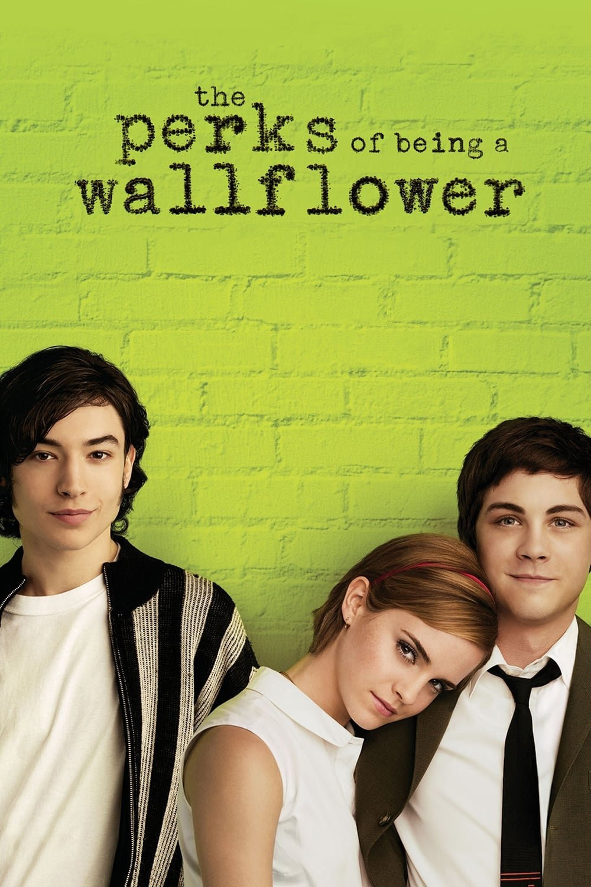

Morena Carabetta
Comencé 4to año llena de miedos e incertidumbre, lejos de mis amigas, creyendo que había tomado la decisión equivocada al elegir la orientación. Los primeros meses fueron complicados: me costó adaptarme a ver nuevas caras y establecer nuevos vínculos. Pero con el paso del tiempo todo empezó a cambiar. De a poco fui conociendo a personas increíbles, que me hicieron sentir acompañada y bienvenida. Hoy puedo decir que me siento muy cómoda con la gente que me rodea y que estoy realmente agradecida por el grupo que se formó. Estoy contenta con el curso y, siendo sincera, me hubiera encantado que nos hubiéramos hecho cercanos desde mucho antes.
Miro para atrás y me doy cuenta de cuánto crecí este año gracias a ellos: por las risas, los trabajos en grupo, las charlas en los recreos y esos pequeños momentos que terminan significando un montón. Me quedo con la tranquilidad de saber que, aunque empecé con miedo, termino el año rodeada de personas que hicieron que todo valiera la pena.
Mis recuerdos favoritos
- El viaje a Bariloche
- Las fiestas de la promo
- La fiesta de egresados
- Las partidas de truco en horas libre
Música que hoy escucho
Mis peliculas y series que he mirado
- 


Un adolescente introvertido empieza el secundario mientras enfrenta traumas del pasado. Al conocer a dos estudiantes mayores, descubre la amistad, el amor y un nuevo sentido de pertenencia.
Un excéntrico profesor inspira a sus alumnos a pensar por sí mismos a través de la poesía, desafiando la rigidez de una institución conservadora.
Dos detectives con métodos opuestos investigan una serie de asesinatos inspirados en los siete pecados capitales. A medida que el caso avanza, el asesino demuestra un nivel inquietante de planificación y frialdad, arrastrando a los investigadores hacia un final tan impactante como inevitable.
Alex, un joven violento y carismático, lidera una pandilla que siembra el caos. Tras ser arrestado, acepta someterse a un programa experimental de rehabilitación que promete “curarlo”. Sin embargo, el tratamiento plantea dilemas morales profundos sobre la libertad, el control y la naturaleza humana.
Mi voz
Respondiendo..
Aprendí a disfrutar más el momento y animarme a hacer las cosas que quiero sin que me importe tanto lo que opina el resto
Que traten de llevarse bien como curso y que aprovechen el tiempo que tienen juntos, que aunque suene cliché, se pasa volando
Las partidas de truco en horas libre y antes de educación física, y las risas y conversaciones sin sentido con mis amigas